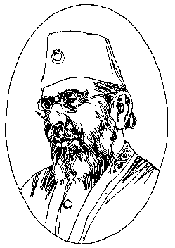

|
From
Biblio, Nov-Dec 1999, p. 31-32.
A reflection on Islam
Before setting out to write his autobiography, Mohamed All, the man who added fuel to the anti-imperialist struggle of Mahatma Gandhi through the Khilafat mobilizations, had tried to compile a biography of the Prophet on the lines of the work done by Shibli Numani, a great scholar of Persian and Arabic. It was only after failing in this endeavour that he undertook the autobiographical effort. My Life has two parts: the first cart mainly deals with a detailed explanation of the author's religious antecedents and his attitude towards Islamic theology; and, the second part which is incomplete and put in as an appendix sets out to explain the origin and growth of misunderstanding between Islam and the West. It could have proved to be `the real exposition, if completed. An added attraction of this newly edited volume is the Introduction written by Mushirul Hasan which is almost the exact reproduction of his contribution to Islam: Communities and the Nation-Muslim Identities in South Asia and Beyond (New Delhi, 1998) edited by himself, and a summarised version of one of his earlier writings Mohamed All: Ideology and Politics (New Delhi, 1981). The Introduction gives the reader a general account of Mohamed All's life. Quite comprehensive in nature and content, it sets out to deal with the quest for identity in colonial India by this "controversial figure". Here, the editor tells us about the life and career of Mohamed All by touching upon his education and early occupations, his [++Page 31] tenure as a journalist, his turning against the Raj and adopting an anti- British stance, his internment, participation in the Khilafat Movement, interaction with Gandhi and other politicians, and a finally, an assessment of his qualities. Mohamed All starts with an apology that he is not an expert on religion and therefore he writes as `the-man-in-the-street' for 'the-man-in-the-street' but after reading the book one can really appreciate his uncanny grasp over the subject. Since he read the Quran for the first time in a complete and comprehending manner during his internment days, he laments that during his childhood he could only learn a few Quranic verses meant for the purpose of performing prayers, without any perceptible efforts. This, in his opinion, could have been avoided if he had belonged to a family specialising in religious learning; or if the Orientalists were also taught religion in the manner that he thinks people in the West are taught. But, at the same time, he upholds the importance of mosques and homes as places of religious learning as against clubs in the West. Talking about Aligarh, his alma mater, about which he was always nostalgic, he says that though it was an amalgam of the East and the West, it did not permit an orientation towards Eastern lore; in the name of 'Theology' only a few elementary texts were taught. He, nevertheless, felt proud about it: "Our communal consciousness was, therefore, far more secular than religious..." His attraction to Shibli Numani at Aligarh was indelible and later he, in Jamia, even tried to copy his way of delivering lectures on theology. Assessing his entire educational background on the basis of the attainment of religious learning, Mohamed All says that he realised that after completing his course at Oxford that he had not even begun it. After his return from Oxford, Mohamed All took up jobs at Rampur and Baroda but very soon switched over to journalism to be at the service of his community. He denied that it was at all a religious call; rather, it was about the secular affairs of his community. He launched the publication Comrade in English in order to arouse patriotism in his fellow Muslims. He considered himself as 'their (Mulsimss') spokesman'. In the same capacity, he took up the issues of European aggression over Turkey and talked about the alliance between the ulama and the Western-educated Muslims as an answer to Europe's ultimatum. But he is frank enough in acknowledging the selfish interests of the two. Also he shows how such things made him and his brother Shaukat Ali take shelter under 'Kalima-i- Tayyiba' or the `good word'. Focusing on the power of the Muslims as comrades, not as commanders, he cites the example of the formation of the "Servants of Kaaba" (1913) to unite Muslims of every sect. These attempts made it more than apparent his desire to formulate an identity of growing anti-imperialism and patriotism. A career as a journalist was not easy. Mohamed All writes about his problems as a journalist and encounters with the British Government. How the Press Act of 1910 put curbs on the freedom of expression and how his article "The Choice of the Turks" anti-British in content opened the door of internment for him and Shaukat Ali under the Defence of India Act. His other journal Hamdard was also forfeited, though it kept off the heat of advocacy Thereafter, he was interned and put at different places Mehrauli, Lansdowne and Chhindwara.  During his internment, Mohamed Ali utilised his `forced leisure' to read the Quran for fully. The Quran cannot be a leisure reading as it has a "fragmentary fashion" -- each part of the Quran has a circumstance which supplies a relevance and a context. Each and every verse has a context. The reading of the Quran, however, gave him a new meaning in life. Mohamed All, at this point, expresses his urge to tell others what he himself had discovered -- a force of Truth -- and shows it also with quotations from the Gospels of Christianity. His entire analyses shows an in-depth insight of comparative religions and a grasp of the philosophical aspect of religious studies. To show, again, his love for the Quran and Islam, Mohamed Ali discusses two European writers -- M. Renan and H.G. Wells who were not Muslims but were neither professing Christians. Taking them as examples, he tried to make others understand the firmness of his faith as he found it in "the never-fading freshness of the Quran" as against these philosophers who criticised Christianity -- their own religion. He also felt that what Europe knows as Christianity is not the teaching of Jesus but the stories told by the apostles. He deals with -- often pointedly showing faults -- the history and story of doctrination in Christianity. The coming of Islam into contact with the Greek philosophy is seen as the growth of Muslim scholasticism whereas the Hellenistic graft is seen by him as something which changed Christianity out of recognition from its original form. Mohamed Ali vehemently takes issue with Christianity and Christendom and even goes to the extent of asserting that "Christianity as a living faith is on the wane". This whole issue of Islam versus Christianity can be discussed in the light of the latest on-going debate. In a recently published article "Islam, The West, and the World" (Journal of Islamic Studies, Oxford, May 1999) Immanuel Wallerstein poses the question as to why the Christian world seems to single out the Islamic world as its particular demon ever since the very emergence of Islam. And the same can also be said regarding Islam vis-a-vis Christianity. Samuel Huntington sees the `Christian' West and Islam as two antithetical `civilizations'. For the moment, it can be said that though Mohamed Ali tried to draw a comparison between the two -- while endorsing his own religion -- he also expresses his belief elsewhere that "all religion is intended by the Divine Being" and regards Jesus as "one of the Prophets of Israel". On another occasion he also hails Islamic tolerance as a fact of history. It is not that Mohamed Ali sees only uniformity in Islam. He does write about the Shia-Sunni divide and clashes; the Persian incursion in the arena of power; and the four mutually contending schools of law. However, he holds that the main division in Islam is more political than theological. He also highlights the importance of aql or reasoning in the Islamic theology along with naql or tradition and kashf or the intuitive insight granted to the mystic in his ecstasy. He holds philosophers and fools as equals before God and the Quran which he considers to be "everyman's book" intelligible to both. And all this he says without being an 'authority on Islam'! The second and incomplete part of the work which he claims to be "the heart of my subject" sets out to trace a "brief" and "adequate" history of the misunderstanding that exists between Islam and the West. Again, as before, be challenges the originality of the Gospels written by "the Galilean apostles who had been companions of Jesus during his ministry". He discusses at length the inner dynamism of the Christian Church, with a detailed note on various groups of gnostic heretics. He also shows the origin of different creeds and divergence of opinions on prominent issues like the Trinity. He mentions how different Christian emperors -- Constantine, Valens and Theodosius -- made attempts to bring about uniformity for which they even resorted to persecution. He shows how the establishment of religion superseded the exercise of reason. By contrast, he stresses on how Islam served as a tolerant creed. In fact, instead of finding the causes of misunderstanding, this section more than demonstrates the misunderstanding itself.Perhaps the author would have dealt with it later had this part of hte book got completed in its intended form, and then the on-going debate on Islam and Christianity pitted against one another would have found a conclusion. Mohamed Ali's autobiography, though mostly religio-philosophical in nature, does touch upon the question of `Muslim identity' vis-a-vis the colonial government and the West. My Life is a major statement of how a Muslim finds himself placed amid differing ideologies. It gives the reader an insight into the Muslim thinking, the place religion has in his/her life and the Muslims own role in different spheres of life, particularly at the levels of society and nation. The book, no doubt, would have given a more comprehensive picture had it been completed, but even in its present form, on can draw historical inferences. Though the book is generally free from major mistakes, the few errors that one does find are serious. For example, the year of Syed Ahmad Khan's (1817-1898) passing away is given to be 1889 in the Preface. One also fails to understand the repetition of a particular verse in the Introduction and that too with two varying citations. The book, otherwise, is insightful reading for anyone interested in history, philosophy, religion, sociology and politics. Back to the top. |